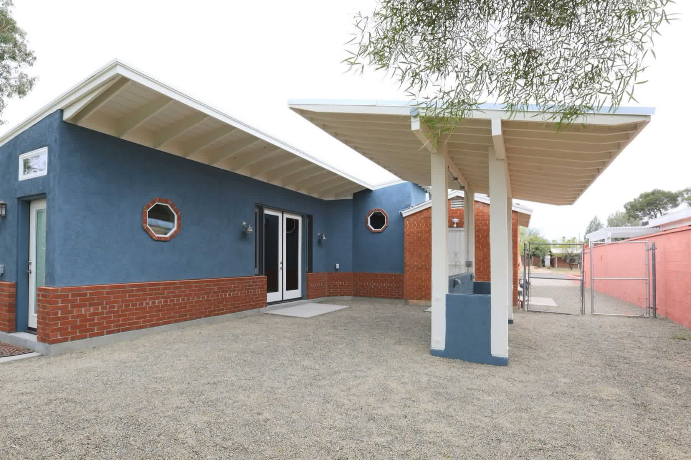
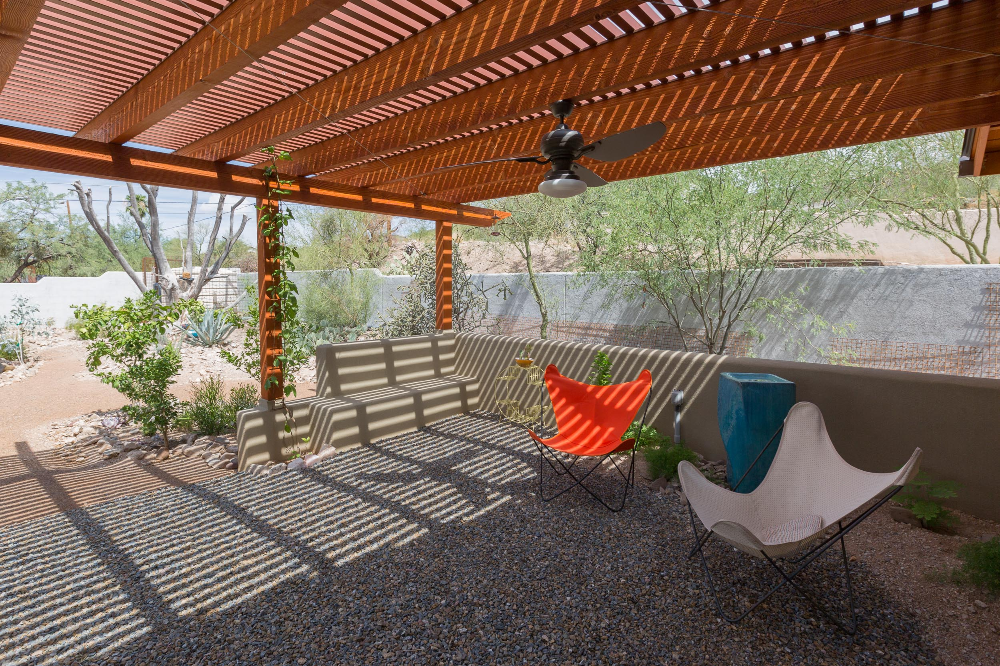
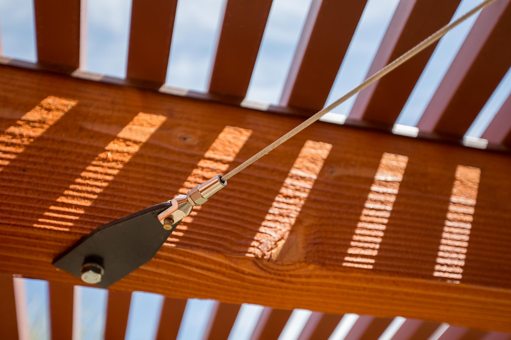

Sam Hughes Historic Addition
Residential / Historic remodel
Tucson, Arizona
Jake Boen designs new spaces and gives existing buildings a second life.


The studio
Before founding In Place Architecture, Jake worked as a union carpenter and a construction superintendent. That experience informs how he designs, details and documents buildings today.
Meet Jake Boen